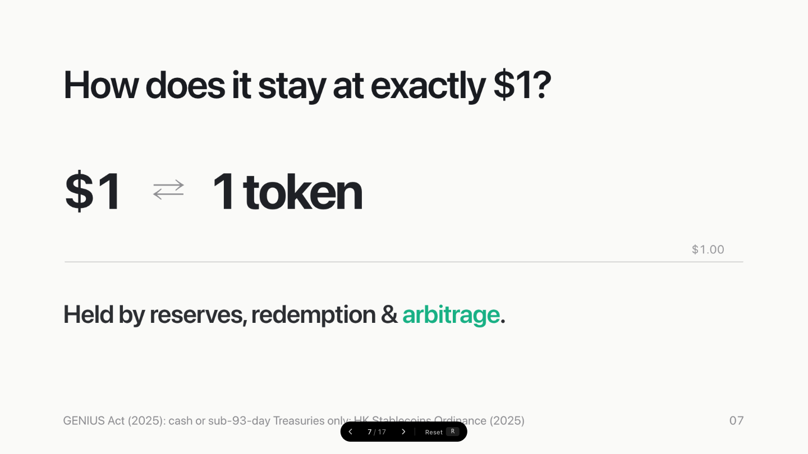
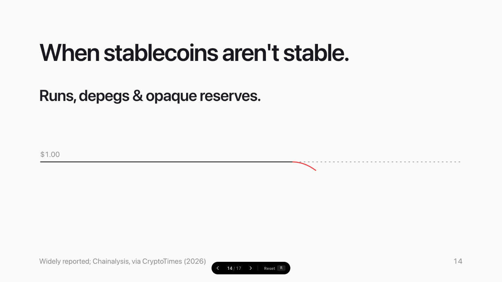
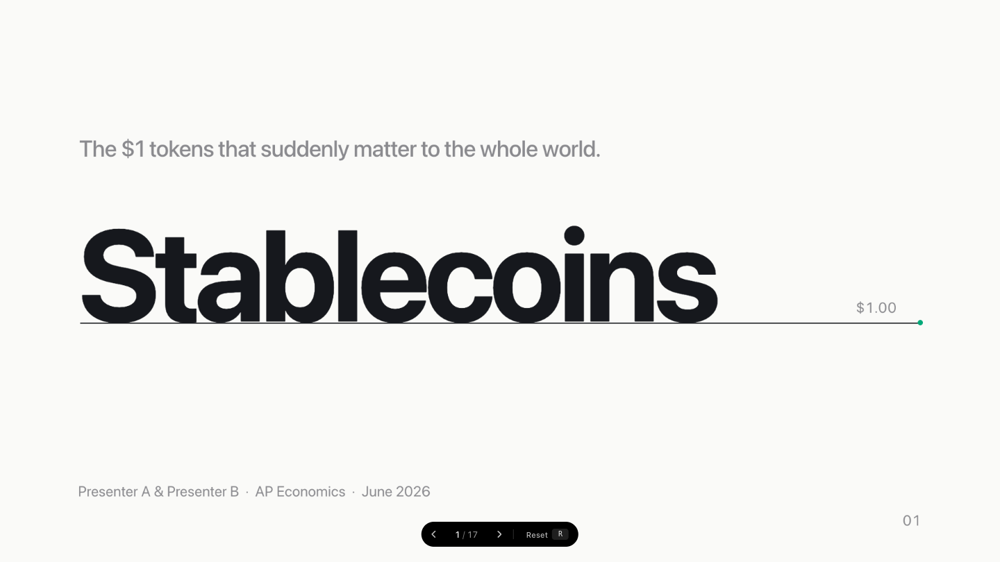
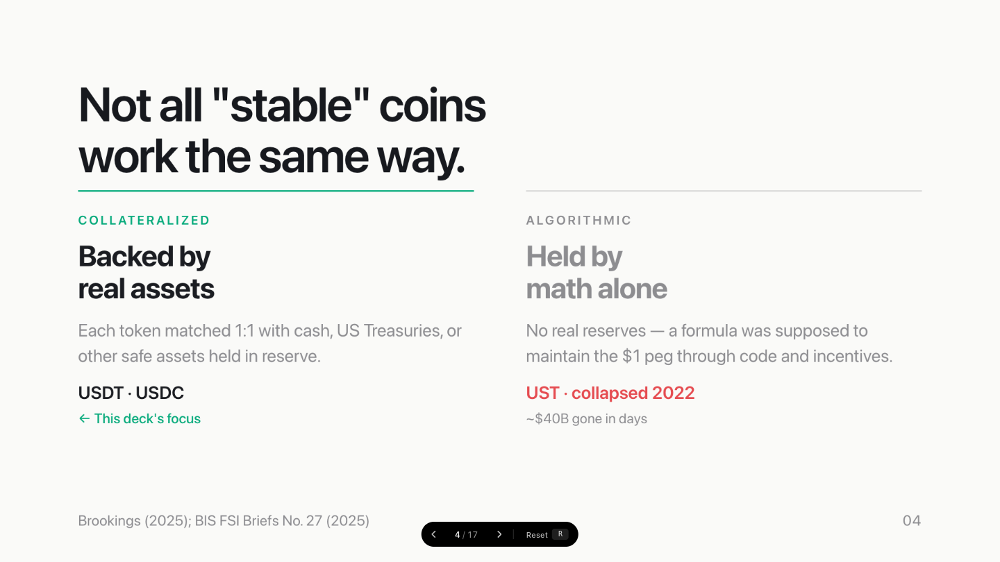
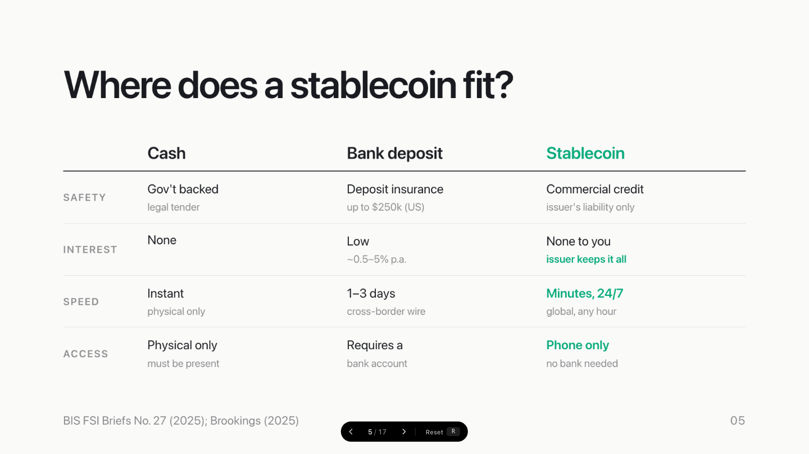

Title
Your tagline or deck subtitle here.
Brand Name
$1.00
Presenter · Organization · Date
01
Headline
Your main point in one clear, memorable statement.
A supporting sentence that provides context, data, or nuance —
kept to two lines maximum.
02
Stats
The numbers that anchor the argument.
$000B
short descriptor for
this first metric
00%
short descriptor for
this second metric
03
Flow
How value moves, step by step.
Node A
Node B
Outcome
04
Chips
Category label
Key items displayed in a scannable row.
Item One
· detail
Item Two
· detail
Item Three
· detail
One observation that follows from the items above.
05
Attr List
What kind of thing is it?
Property One
— brief, precise definition in plain English
Property Two
— the defining advantage goes here, in jade
Property Three
— keep each row to one clear thought
Property Four
— three to four items is the ideal range
06
Moment
The core question
Who decides, or
who benefits?
07

Media · Full
Evidence
What the audience is looking at
— one line of context.
RENDER
· source / version
08
Media · Split
Render · CAD · PCB
Explain it on the left, show the proof on the right.
One point
— what this evidence proves
The result
— the outcome, in jade
One more
— keep it to three lines

caption · what / version
09
The proof
Several pieces of evidence, side by side.

First
— what it shows

Second
— what it shows

Third
— what it shows
10
Plain
A headline an expert understands.
In plain words:
what it means for a non-expert
— one sentence, accent rule, technical terms stay smaller below.
Supporting detail
— the technical specifics live here, in the regular muted style
Another
— experts read these; the plain line above carries everyone else
11
Compare
What changed
What we couldn't do
before
→
can now
The old limitation, in
plain words
→
What we
now do
instead
FIRST
Another long-standing
pain point
→
The
iteration
that fixed it
A third gap nobody solved
→
Our
approach
, and why it's better
12